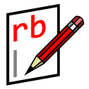

SketchUp Ruby Code Editor
By: Alexander C. Schreyer (www.alexschreyer.net)
Version:
This code editor allows writing and modifying Ruby scripts directly within SketchUp.
These scripts can be used to create geometry, add functionality or
add data within the SketchUp 3D modeling environment.
THIS SOFTWARE IS PROVIDED "AS IS" AND WITHOUT ANY EXPRESS OR IMPLIED WARRANTIES,
INCLUDING, WITHOUT LIMITATION, THE IMPLIED WARRANTIES OF MERCHANTABILITY AND
FITNESS FOR A PARTICULAR PURPOSE.